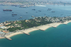
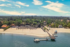

Multimédia
Nesta página encontra conteúdo multimedi.a
Fotografias




Vídeo
Poema
Luanda é o poeta ou o poema?
Luanda é o poeta ou o poema?
Poema que nasce na Mutamba
E se aperta no mais cheio maximbombo
E se aperta no mais cheio maximbombo
Que importa a linha e o destino
Se Luanda vai no verso
E no canto da sereia?
Luanda é um poema que se canta ou pinta e se dança em ritmos amantes e viscosos.